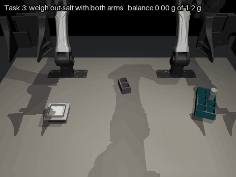
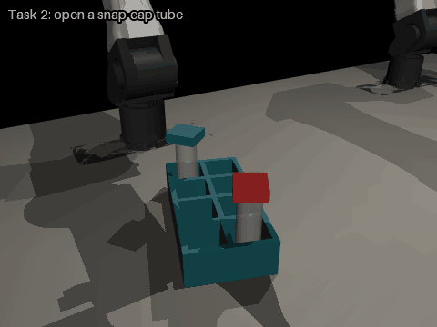
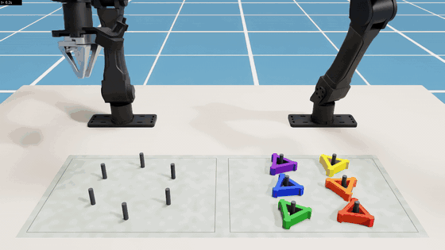
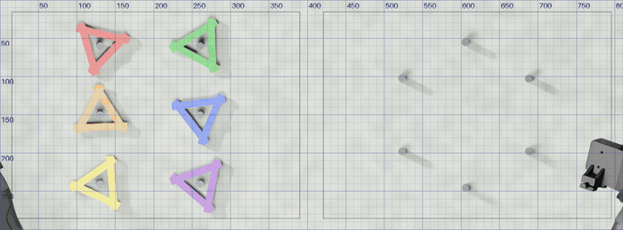
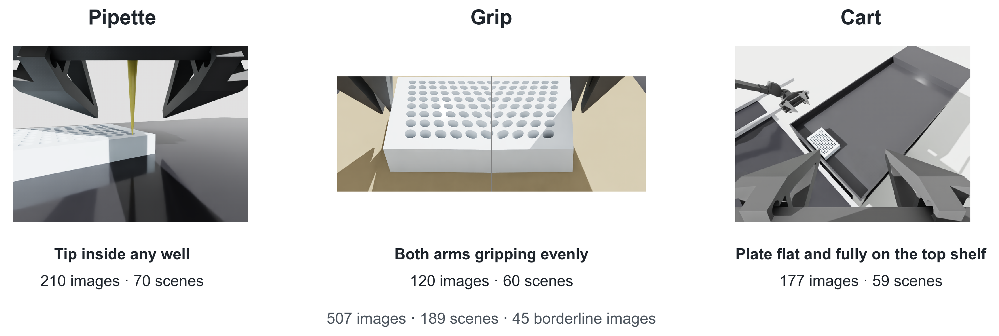
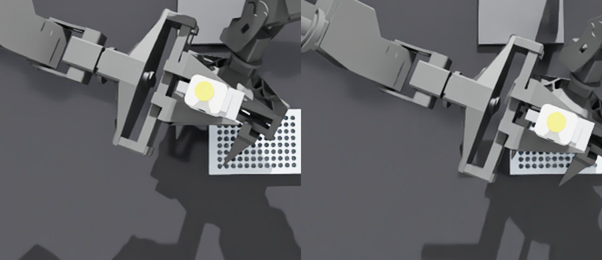

Robot Manipulation Evals
Three student projects testing how well AI models handle hands-on robot work in simulation.
Fernando Lerma Martinez
A model writes the robot’s code
MuJoCo, two YAM arms
Lab bench tasks: vials, snap caps, salt
Adyaa Khera
A model directs each move
Isaac Sim, two YAM arms
FLS peg transfer, a surgical skills test
Henry Williams
A model checks each step
Isaac Sim, lab equipment
Pipette, plate grip and plate cart checks
Three jobs for an AI model in robot work
Writes the program
Fernando
Writes code for two simulated YAM arms
Practises and keeps its best version
Scored on 20 layouts it never practised on
Directs each move
Adyaa
Looks at camera photos
Decides every pick, hand-over and place
Scored on peg transfers done, out of 12
Checks each step
Henry
Looks at one image of a robot step
Says whether it worked, or that it can’t tell
Scored on wrong approvals and “can’t tell” answers
2
Fernando: a model writes the robot’s code
Can an AI model get better at a lab task by practising?
- The model writes the program for two simulated YAM arms
- It practises in rounds on different layouts and keeps its best version
- Then it is tested once on 20 layouts it never saw
- Tasks: move a vial, open a snap cap, weigh out salt with both arms
Setup
- MuJoCo 3.5, on A10 nodes of Purdue’s Gilbreth cluster
- Two I2RT YAM arms (MuJoCo Menagerie model)
- GPT-6 Luna, GPT-6 Sol, Claude Haiku 5.5, Qwen3.8-27B, through OpenRouter
- At least 37 scored runs

Weighing task, hand-written reference solution, 6× speed
3
Fernando: what happened
Practice helps, mostly by keeping the best attempt, when the task is hard and there are enough practice layouts.
GPT-6 Sol
GPT-6 Luna
Claude Haiku 5.5
Qwen3.8-27B
Hand-written
reference: 19
0
5
10
15
20
Full weighing task, learned in two halves on 12 practice layouts. Held-out layouts passed out of 20, one dot per run.
Snap cap: three practice runs passed 58 of 60 held-out layouts, against 44 of 60 for fresh attempts without feedback.
4
Fernando: what we learned
- Practice helped on the snap cap, mostly by keeping the best attempt
- Pouring was the hard part, and only Sol came close to the hand-written reference
- Moving a vial was too easy to show anything
Limits
- The model got exact positions from the simulator, not camera images
- Everything ran in simulation, with a few runs per setup
Next
- Use these scripts to collect camera demonstrations and fine-tune a vision-language-action model, starting with the hand-over, which already works every time

Opening a snap cap, hand-written reference solution, 6× speed
5
Adyaa: a model directs each move
Can an AI model pass a surgical skills test from photos alone?
- Two YAM arms in Isaac Sim do the peg transfer from the surgeons’ FLS exam, 12 transfers in all
- Each turn the model sees an overhead photo with a millimetre grid, plus wrist photos
- It decides each pick, hand-over and place, and a controller moves the arms
Setup
- Isaac Sim 6.0.1, on A10 nodes of Purdue’s Gilbreth cluster
- Two I2RT YAM arms
- GPT-6.1 Sol and Claude Opus 5.5 through OpenRouter, medium thinking
- 3 rounds per model, plus 3 scripted baseline runs

One transfer by Claude Opus 5.5, 2× speed
6
Adyaa: what happened
In our runs, Claude Opus 5.5 did better because it chained several actions in one turn. GPT-6.1 Sol placed more precisely but used one action per turn and ran out of turns.
| Rounds 1 to 3 | Scripted baseline | GPT-6.1 Sol | Claude Opus 5.5 |
|---|---|---|---|
| Transfers done, of 12 | 12, 12, 12 | 6, 5, 5 | 12, 10, 12 |
| Actions per turn | 3.0 | 1.0 | 3.1 to 4.6 |
| Mean placement error | 0 mm | 1.2 to 2.9 mm | 3.0 to 4.8 mm |
| Reward, of 100 | 76.1, 74.6, 75.9 | 50.1, 46.0, 45.1 | 67.0, 51.4, 58.3 |
| Cost for 3 rounds | $0 | $0.33 | $2.44 |
Same three boards for every column. The scripted baseline reads exact positions from the simulator, so it is the ceiling for this robot.
7
Adyaa: what we learned
- Both models stayed below the scripted baseline, best 67.0 against about 76, mostly from missed placements and extra turns
- Neither got steadily better from its own lessons
- The controller’s hand-overs also cost points, so the scripted baseline is what makes a model’s score readable
Limits
- The model got photos and word feedback only, no depth or coordinates
- One run per round, on three boards
Next
- Version 3: no grid, an angled camera like a laparoscope, and both arms working at once

What the model sees each turn, first turn to last
8
Henry: a model checks lab robot steps
Can a small vision model tell when a lab robot’s step went wrong?

Pipette and well plate
A wrong yes dispenses onto the plate, not into the well
Two-arm plate grip
A wrong yes moves a plate that isn’t held evenly
Plate on a cart
A wrong yes moves on with a plate that isn’t seated
Isaac Sim · 507 images · 8 camera views · GPT-6 Luna and Claude Haiku 5.5 via OpenRouter · 3 prompts × 3 thinking levels · 9,126 calls
9
Henry: where the models say yes without seeing
Wrong yeses came where the picture gave the model something plausible to reason from. With nothing to go on, they said “can’t tell”.
- Luna, pipette from overhead, tip hidden: approved 49 of 60, including 21 of 30 tips not in a well. It likely read the dark gripper claw as the tip.
- Haiku, grip from the wrist cameras, contact hidden: approved 29 of 30 bad grips, reasoning that the two views look alike.
- Luna, pipette close-up: approved all 15 tips resting on a rim or between wells. It judged height, not rim against well.
- Pipette from the wrist camera, no tip in frame: nothing to reason from, and Luna said “can’t tell” on 54 to 60 of 60.
Base prompt, high thinking, unless a range is given.

Zoomed crops of the overhead image. Both tips are in a well. In some scenes the dark claw ends on the wells (left), in others past the plate (right), and Luna’s approvals seem to follow the claw.
The claw explanation is likely, not yet tested.
10
Henry: what thinking and prompts change
Luna, pipette from overhead, tip hidden (60 scenes)
| Setting | Approved | Wrong, of 30 | Can’t tell |
|---|---|---|---|
| Off, P0 | 32 | 13 | 28 |
| Off, P2 | 13 | 6 | 47 |
| Off, P5 | 0 | 0 | 60 |
| High, P0 | 49 | 21 | 0 |
| High, P2 | 47 | 23 | 9 |
| High, P5 | 28 | 11 | 28 |
P0 base prompt · P2 adds a “can’t tell” sentence · P5 adds a safety warning. A later, separate run at max thinking approved 59 of 60, including all 30 not in a well.
- More thinking made both models commit where they couldn’t see. Haiku’s “can’t tell” on the wrist grips fell from 54 of 60 to 0.
- At high thinking, Haiku swings with the prompt and Luna barely does. The safety warning made Haiku approve nothing on the pipette or grip, good steps included.
- So a lab checker has to be tested with the exact camera, prompt and thinking setting it will run with.
Limits: static simulated images, one answer per image and setting, and the claw explanation is untested.
11
Tools across the three projects
| Fernando | Adyaa | Henry | |
|---|---|---|---|
| Simulator | MuJoCo 3.5 | Isaac Sim 6.0.1 | Isaac Sim |
| Robot | Two I2RT YAM arms | Two I2RT YAM arms | Lab equipment: pipette and well plate, two-arm plate grip, plate cart |
| Models | GPT-6 Luna, GPT-6 Sol, Claude Haiku 5.5, Qwen3.8-27B | GPT-6.1 Sol, Claude Opus 5.5 | GPT-6 Luna, Claude Haiku 5.5 |
| Scoring | 20 held-out layouts per run, against a hand-written reference | Transfers, reward and contacts, against a scripted baseline | Answer key from the 3D geometry |
All three: models called through OpenRouter, jobs on A10 GPU nodes of Purdue’s Gilbreth cluster.
12